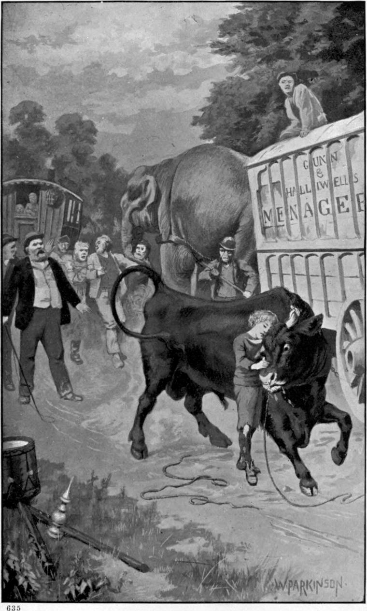

That there had been a fair not far off will partly account for what follows. As Clare sat resting, which was all he could do, with sleep fled and food nowhere, a roar of a different kind invaded his ears. It came along the road this time, not from the caravans. He looked, and spied what would have brought the heart into the throat of many a grown man. Away on the road, in the direction whence the menagerie had come, he saw a cloud of dust and a confused struggle, presently resolved into two men, each at the end of a rope, and an animal between them attached to the ropes by a ring in his nose. It was a bull, in terrible excitement, bounding this way and that, dragging and driving the men—doing his best in fact to break away, now from the one of them, now from the other, and now from both at once. It must have tortured him to pull those strong men by the cartilage of his nose, but he was in too great a rage to feel it much. Every other moment his hoofs would be higher than his head, and again hoofs and head and horns would be scraping the ground in a fruitless rush to send one of his tormentors into space beyond the ken of bulls. With swift divergence, like a scenting hound, he twisted and shot his huge body. The question between men and bull seemed one of endurance.
The pale-faced boy, though full of interest in the strife, yet having had no food that day, was not in sufficient spirits to run and meet the animal whirlwind, so as to watch closer its chances; but the struggle came at length near enough for him to follow almost every detail of it: he could see the bloody foam drip from the poor beast’s nostrils. When about fifty yards away, the bull, by a sudden twist, wrenched the rope from the hands of one of the men. He fell on his back. The other dropped his rope and fled. The bull came scouring down the highway.
A second roar, as of muffled thunder, issued from the leathery flanks of the lion. The bull made a sudden stop, scoring up the ground with his hoofs. It seemed as if in full career he started back. Then down went his head, and like a black flash, its accompanying thunder a bellow of defiant contempt and wrath, he charged one of the caravans. He had taken the hungry lion’s roar for a challenge to combat. It was nothing to the bull that the voice was that of an unknown monster; he was ready for whatever the monster might prove.
The men busy about the caravans and wagons, caught sight of him coming, and in the first moment of terror at a beast to which they were not accustomed, bolted for refuge behind or upon them: they would sooner have encountered their tiger broke loose. The same moment, with astounding shock, the head of the bull went crack against the near hind-wheel of the caravan in whose shafts stood the elephant, patiently waiting orders. The bull had not caught sight of the elephant, or he would doubtless have “gone for” him, not the caravan. His ear, finer than Clare’s, must have distinguished whence the roar proceeded: in that caravan, sure enough, was the lion, with the rest of the great cats. He answered the blow of the bull’s head with a roar thunderously different from his late sleepy leonine sigh. It roused every creature in the menagerie. From the greatest to the smallest each took up its cry. Out burst a tornado of terrific sound, filling with horror the quiet noontide. The roaring and yelling of lion, tiger, and leopard, the laughter of hyena, the howling of jackal, and the snarling of bear, mingled in hideous dissonance with the cries of monkeys and parrots; while certain strange gurgles made Clare’s heart, lover of animals though he was, quiver, and his blood creep. The same instant, however, he woke to the sense that he might do something: he ran to the caravans.
By this time the men, master and all, fully roused to the far worse that might follow the attack of the bull, had caught up what weapons were at hand, and rushed to repel the animal. For more than one or two of them it might have proved a fatal encounter, but that the enraged beast had entangled his horns in the spokes and rim of the wheel. In terror of what might be approaching him from behind, he was struggling wildly to extricate them. Peril upon peril! What if in the contortions of his mighty muscles he pulled off the wheel, and the carriage toppled over, every cage in it so twisted and wrenched that the bearings of its iron bars gave way! The results were too terrible to ponder! This way and that, and every way at once, he was writhing and pushing and prising and dragging. The elephant turned the shafts slowly round to see what was the matter behind. If the bull and the elephant yoked to the caravan came to loggerheads, ruin was inevitable. The master thought whether he had not better loose the elephant while the bull was yet entangled by the horns. With one blow of his trunk he would break the ruffian’s back and end the affray! It were good even, if one knew how, to loose the wicked-looking horns: the brute’s struggles to free them were more dangerous far than could be the horns themselves!
While he hesitated, Clare came running up, with Abdiel at his heels ready as any hornet to fly at bull or elephant, let his master only speak the word. But the moment Clare saw how the bull’s horns were mixed up with the spokes and fellies of the wheel, a glad suspicion flashed across him: that was old Nimrod’s way! could it be Nimrod himself? If it were, the trouble was as good as over! The suspicion became a certainty the instant it woke. But never could Clare altogether forgive himself for not at first sight recognizing his old friend. I believe myself that hunger was to blame, and not Clare.
The men stood about the animal, uncertain what to do, as he struggled with his horns, and heaved and tore at the wheel to get them out of it, the roars and howls and inarticulate curses going on all the time. The elephant must have been tired, to stand so and do nothing! For a moment Clare could not get near enough. He was afraid to call him while the bull could not see him: Nimrod might but struggle the more, in order to get to him!
Up rushed a fellow, white with rage and running, bang into the middle of the spectators, and shook the knot of them asunder. It was one of the two men from whom Nimrod had broken. He had a pitchfork in his hands which he proceeded to level. Clare flung his weight against him, threw up his fork, shoved him aside, and got close to the maddened animal. It was his past come again! How often had he not interfered to protect Nimrod—and his would-be masters also! With instinctive, unconscious authority, he held up his hand to the little crowd.
“Leave him alone,” he cried. “I know him; I can manage him! Please do not interfere. He is an old friend of mine.”
They saw that the bull was already still: he had recognized the boy’s voice! They kept his furious attendant back, and looked on in anxious hope while Clare went up to the animal.
“Nimrod!” he whispered, laying a hand on one of the creature’s horns, and his cheek against his neck.
Nimrod stood like a bull in bronze.
“I’m going to get your horns out, Nimrod,” murmured Clare, and laid hold of the other with a firm grasp. “You must let me do as I like, you know, Nimrod!”
His voice evidently soothed the bull.
By the horns Clare turned his head now one way, now another, Nimrod not once resisting push or pull. In a moment more he would have them clear, for one of them was already free. Holding on to the latter, Clare turned to the bystanders.
“You mustn’t touch him,” he said, “or I won’t answer for him. And you mustn’t let either of those men there”—for the second of Nimrod’s attendants had by this time come up—“interfere with him or me. They let him go because they couldn’t manage him. He can’t bear them; and if he were to break loose from them again, it might be quite another affair! Then he might distrust me!”
The menagerie men turned, and looking saw that the man with the pitchfork had revenge in his heart. They gave him to understand that he must mind what he was about, or it would be the worse for him. The man scowled and said nothing.
Clare gently released the other horn, but kept his hold of the first, moving the creature’s head by it, this way and that. A moment more and he turned his face to the company, which had scattered a little. When the inflamed eyes of Nimrod came into view, they scattered wider. Clare still made the bull feel his hand on his horn, and kept speaking to him gently and lovingly. Nimrod eyed his enemies, for such plainly he counted them, as if he wished he were a lion that he might eat as well as kill them. At the same time he seemed to regard them with triumph, saying in his big heart, “Ha! ha! you did not know what a friend I had! Here he is, come in the nick of time! I thought he would!” Clare proceeded to untie the ropes from the ring in his nose. The man with the pitchfork interfered.

“That wonnot do!” he said, and laid his hand on Clare’s arm. “Would you send him ramping over the country, and never a hold to have on him?”
“It wasn’t much good when you had a hold on him—was it now?” returned the boy. “Where do you want to take him?”
“That’s my business,” answered the man sulkily.
“I fancy you’ll find it’s mine!” returned Clare. “But there he is! Take him.”
The man hesitated.
“Then leave me to manage him,” said Clare.
A murmur of approbation arose. The caravan people felt he knew what he was saying. They believed he had power with the bull.
While yet he was untying the first of the ropes from the animal’s bleeding nostrils, Clare’s fingers all at once refused further obedience, his eyes grew dim, and he fell senseless at the bull’s feet.
“Don’t tell Nimrod!” he murmured as he fell.
“Oh, that explains it!” cried the man with the pitchfork to his mate. “He knows the cursed brute!” For Clare had hitherto spoken his name to the bull as if it were a secret between them.
Neither had the sense to perceive that the explanation lay in the bull’s knowing Clare, not in Clare’s knowing the bull. They made haste to lay hold of the ropes. Nimrod stood motionless, looking down on his friend, now and then snuffing at the pale face, which the thorough-bred mongrel, Abdiel, kept licking continuously. Noses of bull and dog met without offence on the loved human countenance. But had the men let the bull feel the ropes, that moment he would have been raging like a demon.
The men of the caravan, admiring both Clare’s influence over the animal and his management of him, grateful also for what he had done for them, hastened to his help. When they had got him to take a little brandy, he sat up with a wan smile, but presently fell sideways on his elbow, and so to the ground again.
“It’s nothing,” he murmured; “it’s only I’m rather hungry.”
“Poor boy!” said a woman, who had followed her brandy from the house-caravan, afraid it might disappear in occult directions, “when did you have your last feed?”
She stood looking down on the white face, almost between the fore-feet of the bull.
“I had a piece of bread yesterday afternoon, ma’am,” faltered Clare, trying to look up at her.
“Bless my soul!” she cried, “who’s been a murderin’ of you, child?”
She thought he was in company with the two men; and they had been ill-treating him.
“I can’t get any work, ma’am, so I don’t want much to eat. Now I think of it, I believe it was the gladness of seeing an old friend again, and not the hunger, that made me feel so queer all at once.”
“Where’s your friend?” she asked, looking round the assembly.
“There he is!” answered Clare, putting up his hand, and stroking the big nose that was right over his face.
“Couldn’t you rise now?” said the woman, after a moment’s silent regard of him.
“I’ll try, ma’am; I don’t feel quite sure.”
“I want you to come into the house, and have a good square meal.”
“If you would be so kind, ma’am, as let me have a bit of bread here! Nimrod would not like me to leave him. He loves me, ma’am, and if I went away, he might be troublesome. Those men will never do anything with him: he doesn’t like them! They’ve been rough to him, I don’t doubt. Not that I wonder at that, for he is a terrible beast to most people. They used to say he never was good with anybody but me. I suppose he knew I cared for him!”
His eyes closed again. The woman made haste to get him something. In a few minutes she returned with a basin of broth. He took it eagerly, but with a look of gratitude that went to her heart. Before he tasted it, however, he set it on the ground, broke in half the great piece of bread she had brought with it, and gave the larger part to his dog. Then he ate the other with his broth, and felt better than for many a day. Some of the men said he could not be very hungry to give a cur like that so much of his dinner; but the evil thought did not enter the mind of the woman.
“You’d better be taking your beast away,” said the woman, who by this time understood the affair, to the two men.
They were silent, evidently disinclined for such another tussle.
“You’d better be going,” she said again. “If anything should happen with that animal of yours, and one of ours was to get loose, the devil would be to pay, and who’d do it?”
“They’d better wait for me, ma’am,” said Clare, rising. “I’m just ready!—They won’t tell me where they want to take him, but it’s all one, so long as I’m with him. He’s my friend!—Ain’t you, Nimrod? We’ll go together—won’t we, Nimrod?”
While he spoke, he undid the ropes from the ring in the bull’s nose. Gathering them up, he handed them politely to one of the men, and the next moment sprang upon the bull’s back, just behind his shoulders, and leaning forward, stroked his horns and neck.
“Give me up the dog, please,” he said.
The owner of the menagerie himself did as Clare requested. All stood and stared, half expecting to see him flung from the creature’s back, and trampled under his hoofs. Even Nimrod, however, would not easily have unseated Clare, who could ride anything he had ever tried, and had tried everything strong enough to carry him, from a pig upward. But Nimrod was far from wishing to unseat his friend, who with hands and legs began to send him toward the road.
“Are you going that way?” he asked, pointing. The men answered him with a nod, sulky still.
“Don’t go with those men,” said the woman, coming up to the side of the bull, and speaking in a low voice. “I don’t like the look of them.”
“Nimrod will be on my side, ma’am,” answered Clare. “They would never have got him home without me. They don’t understand their fellow-creatures.”
“I’m afraid you understand your fellow-creatures, as you call them, better than you do your own kind!”
“I think they are my own kind, ma’am. That is how they know me, and do what I want them to do.”
“Stay with us,” said the woman coaxingly, still speaking low. “You’ll have plenty of your fellow-creatures about you then!”
“Thank you, ma’am, a thousand times!” answered Clare, his face beaming; “but I couldn’t leave poor Nimrod to do those men a mischief, and be killed for it!”
“You’d have plenty to eat and drink, and som’at for your pocket!” persisted the woman.
“I know I should have everything I wanted!” answered Clare, “and I’m very thankful to you, ma’am. But you see there’s always something, somehow, that’s got to be done before the other thing!”
Here the master came up. He had himself been thinking the boy would be a great acquisition, and guessed what his wife was about; but he was afraid she might promise too much for services that ought to be had cheap. Few scruple to take advantage of the misfortune of another to get his service cheap. It is the economy of hell.
“I sha’n’t feel safe till that bull of yours is a mile off!” he said.
“Come along, Nimrod!” answered Clare, always ready with the responsive deed.
Away went Nimrod, gentle as a lamb.